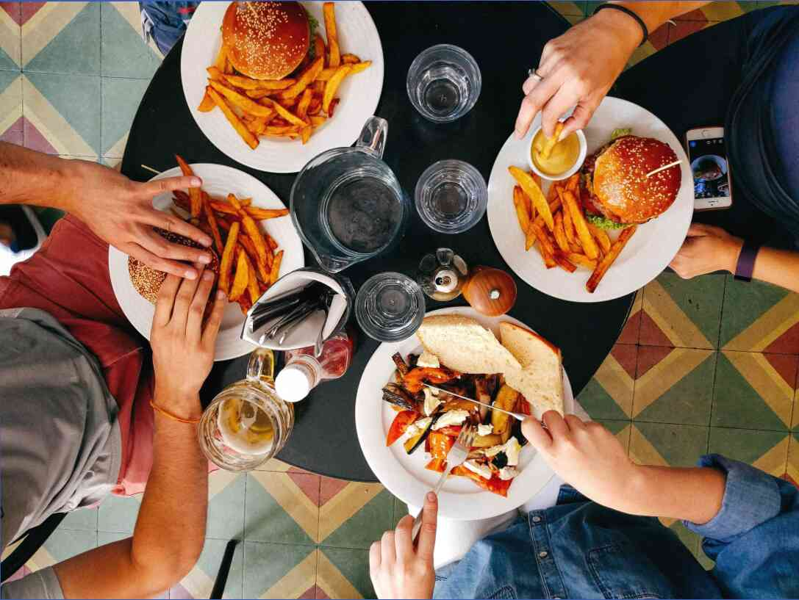

Ciao. Mi chiamo Anastasia e ho ciccia. Suona come un riconoscimento in un gruppo di alcolisti anonimi, ma è un dato di fatto. Negli ultimi anni ho recuperato più di 30 chili.
Che ci crediate o no, ma il caso è davvero impercettibile. In un bel momento ti basta smettere di andare in loro vestiti. Poi ti guardi allo specchio con occhi diversi, e li vedi - kg in eccesso.
Cominciato a chiedere in il suo amato, non crede che avevo recuperato. Mi guardò attentamente e disse: "Beh, sì. Un po'. Non preoccuparti, ti ho anche la più amo."
E qui ci siamo... fu un po ' di relax. Volta ama, significa che è possibile far finta di niente. Cambiato il guardaroba e il più lontano possibile avere. Questa è stata la mia enorme errore di lunghezza 5 anni.
Nel 2015, dopo le operazioni femminili pesavo 62 kg, con una crescita 173. Questo è il mio almeno, meno io non pesava mai. Sembrava sempre che sono terribilmente grassa. Ora guardo le vecchie foto e non mi riconosco più: i gomiti appuntiti, gambe snelle, un po ' di pancia.
Nel 2016 pesavo già poco più di 70 kg. il Mio preferito andato nell'esercito, ho lavorato fino a tardi e di notte poteva mangiare un chilo di caramelle e andare a dormire. In linea di principio, ho permesso a me stessa cosa, ma in quell'anno incursioni sul dolce si sono fatti più frequenti.
Tra il 2017 e il 2019 anno ho iniziato a guarire più evidente. La mia alimentazione non è cambiata, ho mangiato poco. Ma ecco il dolce non poteva negare a se stesso. Più il mio preferito di tutti i tempi ha detto: "Tu non sei grassa. Mangia una barretta di cioccolato."
Nel 2019 anno ho deciso di cambiare se stessi. Ha smesso di mangiare dolci, ho comprato una cyclette (così come ho deciso che lo sport non fa per me, e le biciclette sono amo). Soldi per una corretta alimentazione non era nutrita di cereali: orzo e di grano saraceno in acqua quasi senza sale, potrebbe aggiungere il pezzo di carne o salsiccia. Il problema era che il grano saraceno e orzo non mi piace, e la carne in generale mi provoca un senso di nausea. Per un mese non ho perso non chilogrammi. Ciò. Peso, si trovava a circa 87 kg.
Al lavoro tutto bene visto come mi nutro, e colleghi di acciaio da meravigliarsi che non sto perdendo peso. In una conversazione parlato di ormoni, che dal 2015 ha preso dopo l'intervento. Tutti dicevano che il caso a loro. Andato dal medico, hanno cambiato gli ormoni.
L'anno 2020. Peso sono 96 kg. Dal dolce rinunciare non posso, la forza di volontà di tutti. Ha cercato di ridurre il consumo di zucchero. Ci sono almeno prima di pranzo. Ma per vestire di nuovo sento che sto migliorando. (la bilancia ha dato a mia madre, ancora una volta, non di frustrazione). Come dice il proverbio: "puhnu a passi da gigante."
Capisco che divento simile al vecchio gruznuyu zia, anche se non ho ancora 30.
Ha accumulato soldi andata per un endocrinologo. Tutti rimproverato quando lei gli ormoni, qui ci sono i cattivi, "corretto" ho 30 kg. Nella doccia speravo in una pillola, che mi restituisce i miei 62 kg. (sì, sono ingenua e slabovolynaya, non nego stesso). Un medico in silenzio ho ascoltato e ho preso le analisi. Il risultato mi ha sorpreso.
Giperinsulizm e resistenza all'insulina. 2 assolutamente incomprensibili per me le parole.
La diagnosi è stata fatta a me una settimana fa, e sto ancora cercando di capire con lui. Deciso di avere questo canale, spero di capire in tutto questo insieme a voi.
Mi rendo conto che in molte cose la colpa e ' mia. Ora nabegut aderenti PP e sport e non mi vergogno. Sarò di piangere. Ma spero che di persone buone est sarà più.
Lasciare commenti, racconta le loro storie. Saremo utili gli uni agli altri.


Lascia un commento